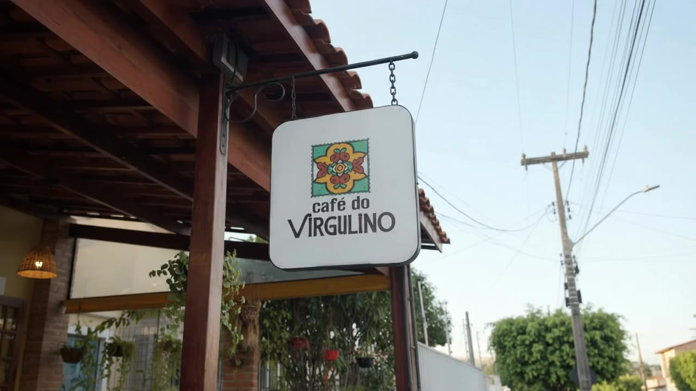
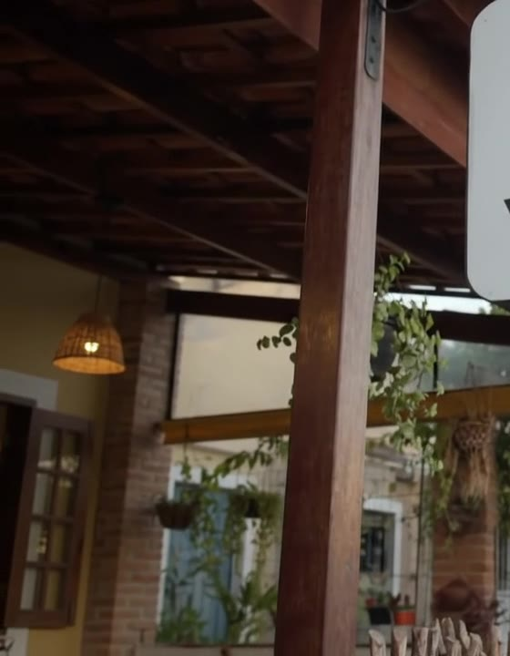

Maurício de Nassau · Caruaru
Comida de vó, forró de raiz.
Café, comida regional e forró raiz em Caruaru. Sopas, cuscuz e tapioca com tempero de casa.
Tem café, tem cuscuz, tem forró. E sempre cabe mais uma conversa.
Um espaço intimista, com decoração regional e cheio de memória. A comida chega com cara de receita de família, no tempero que a gente reconhece de longe.
Uma varanda pra demorar.
Quando tem música ao vivo, a casa vira outra. Quando não tem, a trilha de forró raiz segue fazendo companhia.


4,3
nota no Google, em 156 avaliações
R$ 40–60
por pessoa, segundo quem já visitou
23h
horário de fechamento no Google, pra você não ter pressa
Quinta
o dia mais movimentado da semana
Avaliações no Google
Quem veio, voltou falando.
Comida afetiva, bem feita, além de ambiente acolhedor, ideal para um jantar com a família e amigos.
Ambiente super agradável, com uma proposta bem regional e acolhedora.
Um espaço intimista, cheio de memórias e afetos, com uma culinária regionalista com um bom toque de sofisticação.
A mesa está posta.
- Endereço
- Av. Prof. José Leão, 463
Maurício de Nassau, Caruaru – PE
55012-610 - Telefone
- (81) 99707-8358
- Horário
- Fecha às 23h. Confira os demais dias no Google Maps.
- Serviço
- Refeição no local e retirada na porta